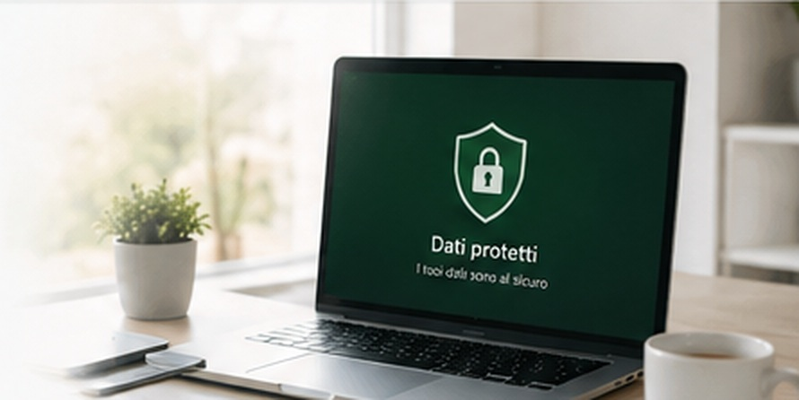
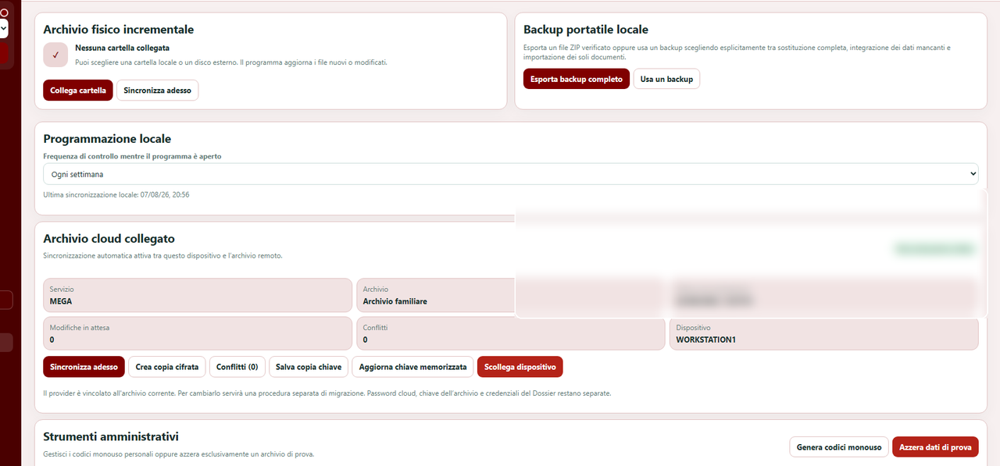

I tuoi dati, protetti come meritano.
Clinica Digitale è progettata attorno al principio che dati sanitari, identità, dispositivi e servizi esterni debbano restare separati e sotto il controllo dell'utente.

Dati sotto il tuo controllo
Le funzioni principali del Dossier sono progettate per restare disponibili anche senza cloud.
Accessi personali
Ogni persona utilizza credenziali proprie e i permessi appartengono all'account, non al singolo computer.
Archivio cifrato
I dati sanitari vengono protetti per evitare che il cloud diventi un archivio clinico leggibile da terzi.
Dispositivi controllabili
Il progetto distingue l'appartenenza della persona al Dossier dall'autorizzazione dei singoli dispositivi.
Backup facoltativi
Il backup locale resta indipendente; il cloud è uno strumento opzionale di protezione e sincronizzazione.
Servizi esterni separati
Calendari e connettori esterni non devono compromettere il funzionamento del Dossier quando non sono collegati.
La serenità nasce anche dal sapere dove sono i propri dati.
Il Dossier è pensato sia per la persona sia per la famiglia, mantenendo separati accessi, profili e informazioni anche quando più persone collaborano alla gestione sanitaria.

Proteggere il Dossier senza obbligare l'utente a usare il cloud.
Le copie locali e il backup portatile restano strumenti autonomi. Il cloud, quando collegato, è facoltativo.
La stessa impostazione su più piattaforme.
Il progetto è predisposto per evolvere verso Windows, macOS e applicazioni dedicate per iOS e Android.